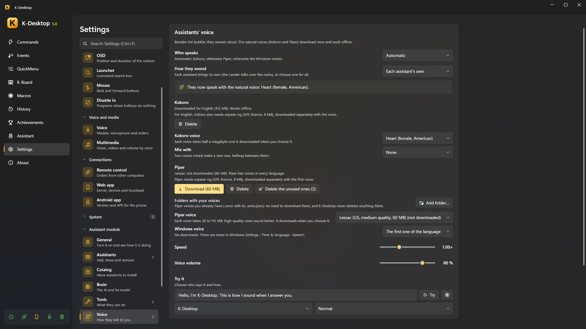

Voice and conversation
Besides the bubble, the assistants answer aloud, each with its own voice. The natural voices download once and work without internet. Settings → Assistant → Voice.

To talk to them you use K-Desktop's speech recognition (wake words, a key to talk…): see Voice and Talking to it.
Who speaks
Language they speak to you in: they answer in that language even if you talk to them in another one, and the voices offered are of that language (K-Desktop's, or one of the six).
| Engine | |
|---|---|
| Automatic | Kokoro; otherwise Piper; otherwise the Windows voices |
| Natural voice (Kokoro) | The most natural one. English, Spanish, French, Italian and Portuguese (not German yet). About 325 MB, plus half a megabyte per voice |
| Natural voice (Piper) | Voices in every language, from 20 to 115 MB each; high-quality ones sound better (low-quality ones are not offered) |
| Windows voices | No downloads. There are more in Windows Settings → Time & language → Speech |
| Beeps only | |
| Don't speak (bubble only) |
Speed and Voice volume are on the same page. The voices of each engine (downloading and choosing them) are in Voice → Voices:
- Kokoro Folders with your voices: voices you already have (
.ptor.bin, with their Kokoro name, likeaf_bella; the language comes from the first letter) are used from there without downloading them, marked as yours. One that is also in the list shows only once. K-Desktop never deletes anything there. - Kokoro voice and Mix with: two voices mixed make a new one, halfway between them (How much of …).
- Piper voice and its Variant (some voices have several people or ways of speaking). Folders with your voices:
Piper voices you already have (
.onnxwith its.onnx.json) are used from there without downloading them, and K-Desktop never deletes anything there. Delete the unused ones frees space. - For some languages Kokoro, and Piper always, need espeak-ng (GPL licence, 9 MB), downloaded separately with the voice.
- Windows voice: which of the ones Windows has.
- Try this voice, under each one: the test sentence with that voice, as it is (no effects).
How they sound
How they sound: each assistant brings its own profile (the Lander talks over the radio, from the Moon), or choose one for all: Natural, Classic robot, Martian, Mission control, 8-bit, Beeps, or one of yours.
Try it: choose who says it and how it says it (normal, happy, after a failure) and press Try.
Voice profiles
Voice → Voice profiles is the list: the built-in ones and yours, with New at random and Import…. Pressing one opens its editor on the same page (← Voice profiles goes back to the list), with Duplicate, Export and, if it is yours, Delete. The built-in ones stay as they are: Duplicate one to make yours. The Use for everyone icon (in the list and in the editor) puts that profile in How they sound (lit while everyone uses it; pressed again, or if you delete it, each assistant goes back to its own). The profile's Voice only counts if Who speaks is Automatic. A profile has a voice (engine), speed and volume, and a chain of effects its voice always goes through, in order (drag them by the dots to change it):
| Effect | |
|---|---|
| Pitch | Higher or lower |
| Formants | The size of the mouth, without changing the pitch |
| Ring modulator | Classic robot |
| Vocoder | Synthesizer robot, on one note |
| Bitcrusher | 8-bit robot |
| Radio | Narrow band and static, with a beep at the end and a click when opening and closing |
| Chorus | Metallic, wavering voice (martian) |
| Flanger | Like chorus, faster and deeper: jet plane |
| Echo | From a cockpit (short) to space (long) |
| Glitch | Cuts and repeats, as if broken |
Besides Always, a profile can add effects for some moments, such as when the assistant is happy or after a
crash.
Try it when something changes lets you hear each change as you make it. Profiles can be exported and imported
(.json).
When they speak aloud
- Keep quiet with something full screen: with a film or a game in full screen, only the bubble.
- Quieter at night: from 22:00 to 8:00, the voice at half the volume.
- They sound from where they are: louder from the speaker on the side where the assistant is.
While an assistant thinks and answers, the volume of the other programs stays down (with Turn the volume down while you speak), and it does not take its own voice for an order.
Each assistant its own
On each assistant's card, Personality and Voice:
- Language: the one it answers and speaks in. By default the one in Settings → Assistant → General → Language they speak to you in (they answer in it even if you talk to them in another).
- Personality: what tells the AI who it is and how it talks. Change it as you like (Reset brings back the one of its package).
- Voice: engine, voice (only the chosen engine's), profile, and speed and volume of its own, or «Global». Try its voice.
K-Desktop itself (the assistant without a character) has the same pages.
The conversation
- Fixed phrases need no AI: «stop» / «never mind» cancels what it is doing; «repeat that»; «undo that»; «repeat the last command».
- Questions back: if it asks you something («Chrome or Edge?») after a spoken order, it listens a few seconds for your answer, without the wake word.
- Permission by voice: when something asks first, answer «yes», «no» or «yes, and don't ask again».
- «Think it over» makes it think harder; «that's wrong» makes it check again (see Brain).
- While it thinks it may say «One moment» if the answer takes a little.
- «Write what I say» starts dictation: what you say next is typed where the cursor is.
- Everything is in the chat of Panel → Assistant, whichever way you said it, and a Stop button.
Long answers
When you ask for something long («explain it in detail», «make me a list», «write me an email», «summarise…») or the answer does not fit a bubble, it says only a short summary and writes the whole text on a reading sheet next to it. There you can Copy it, Save as a note, or have it read to you (Read it to me / Stop). Continue in the chat opens the chat window with that assistant. In the chat, Read it all opens it again.
The «Assistant: say» action
In a command or an event, Assistant: say makes an assistant say something in its bubble and aloud, without the AI («The backup has finished»). Before saying something on its own —a timer, a «tell me when»— an assistant first catches your eye (the Lander flies to the mouse, Kobii walks up to it); with this action, only if Go towards the mouse before saying it is ticked. With Keep quiet with something full screen in its voice settings, while something is full screen on any monitor only the bubble shows.
To have it read what you select, write {selection} as the text and give the command a hotkey: select a text in any
program, press the hotkey and the assistant reads it with its voice. A long text is read whole: the bubble shows its
start and the whole text stays on its reading sheet, next to it. You cut it like any other answer: «stop», «be quiet» or
another order. If nothing is selected, a notice says so.